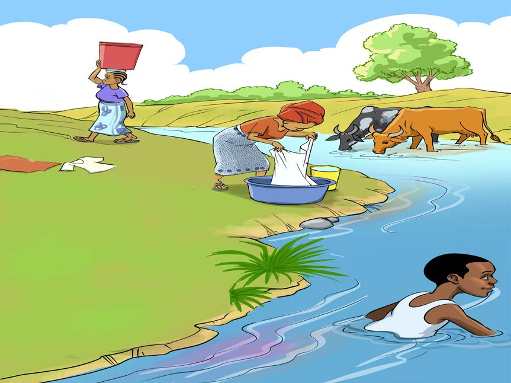

na umeme ili kupunguza matumizi ya nishati ya kuni na mkaa zinazozalisha hewaukaa.
Vitendo vya binadamu katika vyanzo vya maji
Baadhi ya vitendo vya binadamu vinavyofanyika pembezoni au ndani ya vyanzo vya maji huchangia uharibifu wa vyanzo vya maji. Mfano wa vitendo hivyo ni kama vile: kutiririsha majitaka kutoka kwenye nyumba, viwandani na maeneo ya biashara; kufua nguo na kunywesha mifugo. Vilevile, vitendo kama vile: kuoga, kujisaidia haja ndogo au kubwa pembezoni au ndani ya vyanzo vya maji huchafua vyanzo vya maji. Kielelezo namba 3 kinawasilisha baadhi ya vitendo vya binadamu vinavyoharibu vyanzo vya maji yanayotumika kwa matumizi ya nyumbani.
